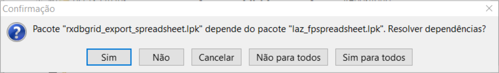

Ele acrescenta componentes diferenciados para entrada de dados, grids e muitas outras coisas que podem dar uma alavancada no UI/UX do seu programa. Dá para instalá-lo também no Delphi versão comercial e Comunity Edition. Eu não considero ele essencial, mas uma vez que usá-lo provavelmente fará dela uma dependência perpétua.
O rx-tools é bem sensível à versão do Lazarus/FPC ou Delphi, uma vez que houver uma nova versão há riscos de que rx-tools não funcione até que a equipe conserte-os. É o mesmo problema com a biblioteca Jedi - também excelente - mas que também é bastante sensível a versão da IDE e compilador.
Vá em Pacote|Gerenciador de Pacotes Online, então procure por “rx” e marque a inteira árvore que pertence a ele. O cuidado é que o pacote ‘rx’ requer muitas dependências e por isso, apesar de ser uma boa suíte não é uma unanimidade entre os programadores. Depende de: zeos, lazreport e alguns outros, por isso se aparecer uma mensagem como:

Responda “Sim para todos”.
Tenha muita paciência, é um dos componentes mais demorados para instalar.
ALERTA: O RX Tools é instalável apenas em versões estáveis do Lazarus e é preciso ter o Zeos previamente instalado.